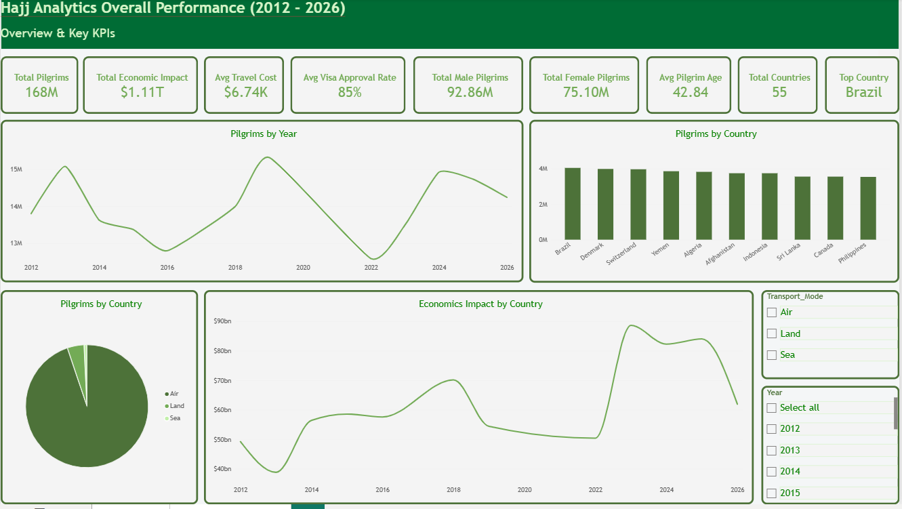

Hajj Pilgrimage Performance Analytics
September 2026
1. Problem Statement
Evaluating multi-year historical trends of Hajj pilgrimage statistics (2012-2026) to analyze demographic distributions, transport modes, cost patterns, and operational demands for logistics optimization.
2. Approach & Tools Used
- Relational Database Modeling (MySQL): Structured database schemas, executed SQL views, and established primary/foreign key relationships.
- Star Schema Architecture: Built fact and dimension tables to support clean Power BI data ingestion.
- Power BI & DAX: Developed complex measures to calculate year-over-year pilgrim growth %, arrival modes distribution, and economic expenditures.
3. Key Insights
- Air Arrival Dominance: Air travel represents over 88% of international arrivals, putting heavy demand on airport infrastructure during peak weeks.
- Domestic vs. Foreign Ratios: Analyzed fluctuations in foreign visa allocations versus domestic permits over the 14-year period.
- Economic Trends: Identified average package cost trends and budget allocation distributions across travel tiers.
4. Business Recommendations
- Optimize airport arrival scheduling across secondary hubs to alleviate flight congestion during peak departure windows.
- Enhance digital visa processing workflows to maintain balanced quota distributions across participating nations.